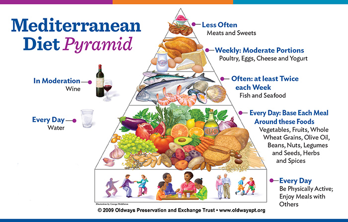

Prevention
An ounce of prevention is worth a pound of cure - Benjamin Franklin
Prevention of AMD
The process of developing age-related macular degeneration is not fully understood. Like many diseases, genetic and environmental factors can increase the risk of developing AMD.1 While genetic factors such as race and age cannot be prevented, several actions can be taken to address environmental factors.
Annual eye exams – Annual eye exams will help you and your doctor catch early AMD to monitor the development of drusen. If caught early, wet AMD can be treated to prevent excessive vision loss. 2
Lifestyle changes – Smoking and having high cholesterol and blood pressure increases the risk of developing AMD. Smokers are four times as likely to develop AMD compared to non-smokers. Quitting smoking reduces the risk of developing AMD to slightly higher than people who have never smoked, showing that smoking cessation is an important prevention method.3
Sun protection – Ultraviolet light (or UV rays) damages the retinal tissue. It is relatively accepted that light rays damage the tissues of the eye and lead to the formation of drusen. Melanin is the body’s natural sun protectant, and as age increases, melanin production slows. Wearing sun glasses while outside and in bright light helps replace the missing protection against UV rays.4
Nutrition – Eating a well-balanced diet is a major preventative measure against developing AMD and preventing vision loss. When high energy light rays hit the retina, small, high energy particles bounce around the retina tissue causing damage. This process is known as oxidative stress. The body is set up to handle a certain amount of damage by regulating the oxidative stress with antioxidants. We consume antioxidants through food such as vegetables, fruit, dark leafy greens, nuts, and fish. By eating antioxidant-rich foods, the body can better repair the damage caused by oxidative stress. As the saying goes, “You are what you eat!”5
Vitamins, Minerals, and Preventing AMD
Researchers predict there is an association between specific vitamins and minerals and preventing vision impairment from age-related macular degeneration. Currently, the treatment for intermediate and late stages of AMD is prescribing an antioxidant supplement supported by the large clinical trial AgeRelated Eye Disease Study (AREDS). The supplement contains lutein, zeaxanthin, vitamin C, vitamin E, and zinc along with other substances that help with absorption. The study found that the supplement slowed the progression of AMD by approximately 25%.6 However, further studies on the supplements to improve eye-related diseases have produced mixed results because antioxidants and nutrients tend to work best in combination with other substances and chemicals found in the original food source.7 The risks and benefits of taking the AREDS supplement should be discussed with your doctor before using the supplement.
One alternative to the supplement is following the Mediterranean diet (after consulting with your doctor). The Mediterranean diet consists of primarily eating vegetables, fruit, beans, whole grains, extra virgin olive oil and fish.8 Little to no red meat, poultry, sugar, and butter are recommended. It is also one of the only scientifically-proven diets to reduce your risk of cardiovascular disease, diabetes, and hypertension.9 Eye health can significantly be protected and improved. One study found that people following the diet had a 41% reduction in risk of developing late stage AMD. Below is an example of the diet. 10

Image source:11
Footnotes
https://www.macular.org/about-macular-degeneration/risk-factors↩︎
https://www.cdc.gov/visionhealth/resources/features/macular-degeneration.html; https://www.aoa.org/healthy-eyes/eye-and-vision-conditions/macular-degeneration?sso=y↩︎
https://www.macular.org/about-macular-degeneration/risk-factors/smoking↩︎
https://www.macular.org/about-macular-degeneration/risk-factors/ultra-violet-and-blue-light↩︎
https://www.ncbi.nlm.nih.gov/pmc/articles/PMC8404659/; https://www.ncbi.nlm.nih.gov/pmc/articles/PMC8614766/↩︎
https://www.aoa.org/healthy-eyes/eye-and-vision-conditions/macular-degeneration?sso=y↩︎
https://www.ncbi.nlm.nih.gov/pmc/articles/PMC8404659/; https://www.hsph.harvard.edu/nutritionsource/antioxidants/#antioxidants%20in%20food↩︎
https://my.clevelandclinic.org/health/articles/16037-mediterranean-diet↩︎
https://my.clevelandclinic.org/health/articles/16037-mediterranean-diet↩︎
https://www.aao.org/eye-health/news/mediterranean-diet-healthy-eating-healthier-eyes↩︎
https://nutrition.org/living-mediterranean-lifestyle/↩︎